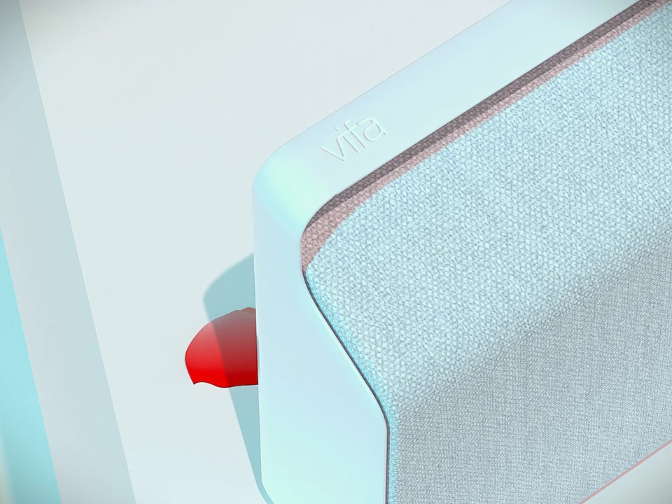
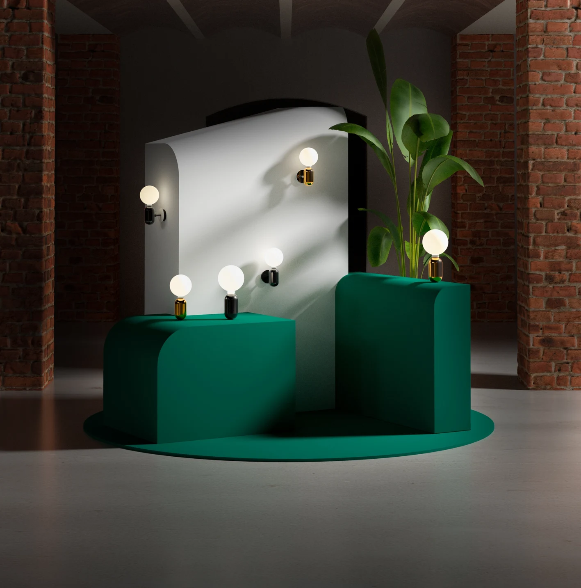
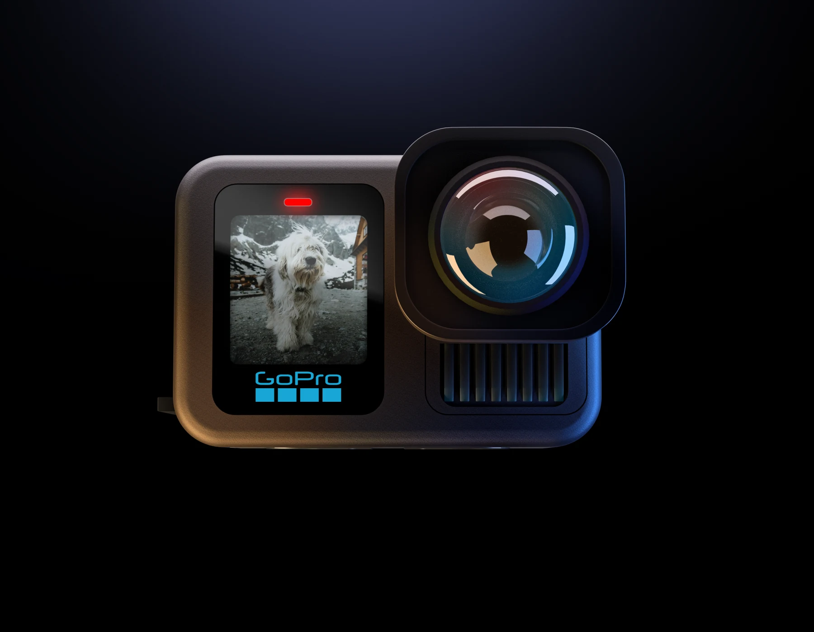
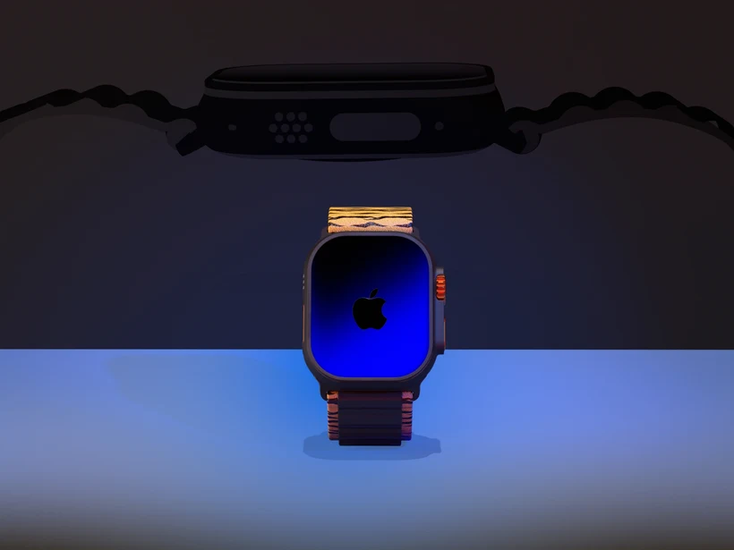
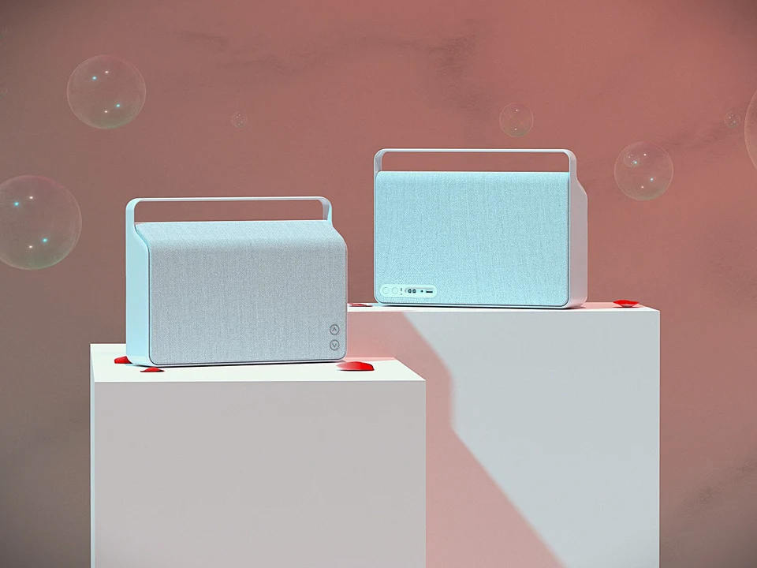
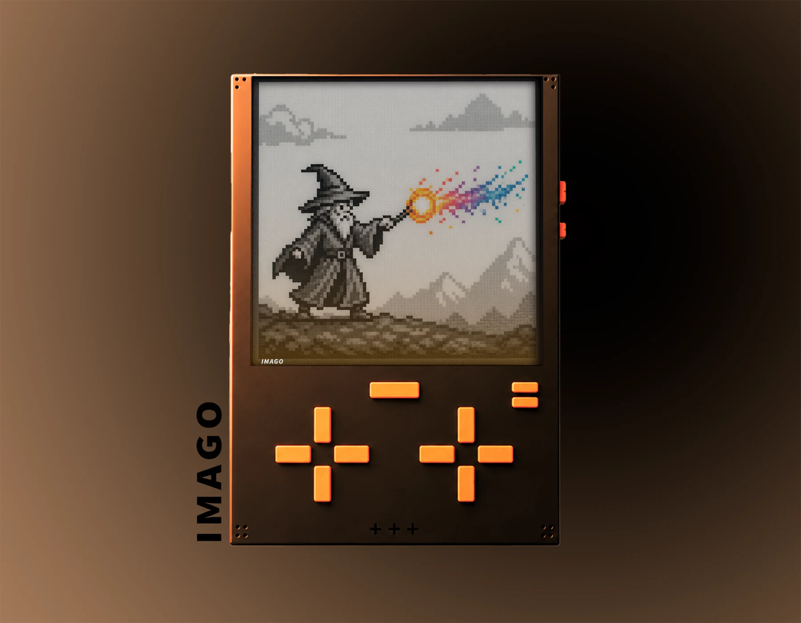
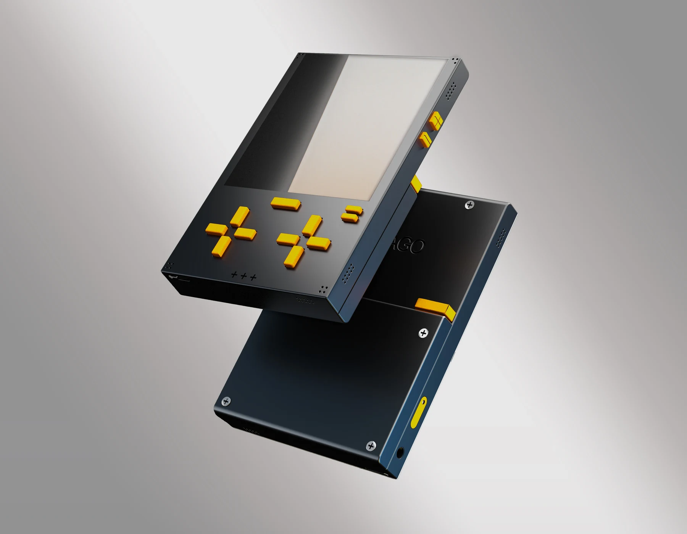
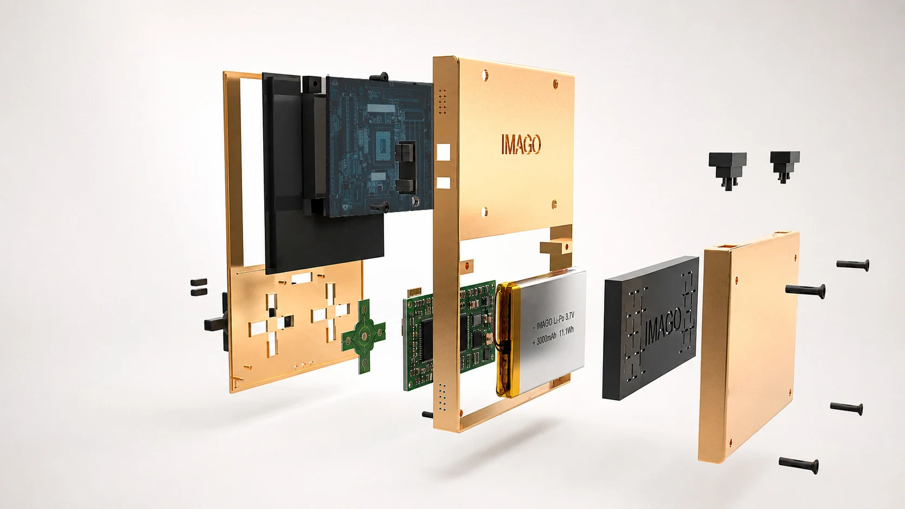

Renderizado
Renders
Ejercicios de visualización de producto centrados en iluminación, materiales y composición. Una exploración de cómo comunicar textura, forma y ambiente a través de la imagen.
Los modelos 3D utilizados en estos ejercicios proceden de internet y no son de autoría propia. Se emplean con fines educativos y de aprendizaje personal; el trabajo presentado se centra en el renderizado.















